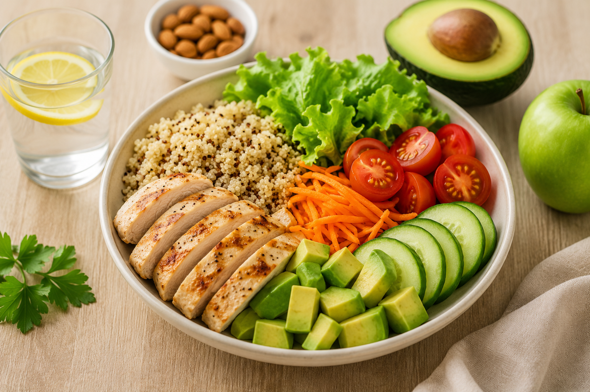
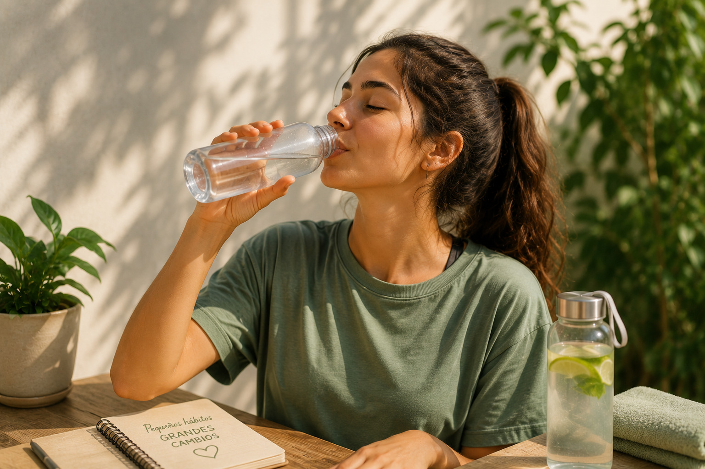

¿Qué incluye la salud?
El bienestar físico, mental y social son esenciales para una vida plena y saludable.
Saber másCuidar desde la infancia...
Los controles médicos y la atención temprana ayudan a que niños y niñas crezcan sanos y seguros.
¿Qué podes hacer hoy?

Alimentate de forma equilibrada
Pequeños cambios en la alimentación mejoran tu salud a largo plazo.
Ver más InformarmeMovete todos los días
30 minutos de actividad física generan grandes beneficios.
Ver más InformarmeDescansá mejor
Dormir bien fortalece cuerpo y mente.
Ver más InformarmeCuidá tu salud mental
El bienestar emocional es parte fundamental de la salud. Hablar y pedir ayuda también es cuidarse.
Ver más
Hidratate
El agua es esencial para el funcionamiento del organismo.
Ver más